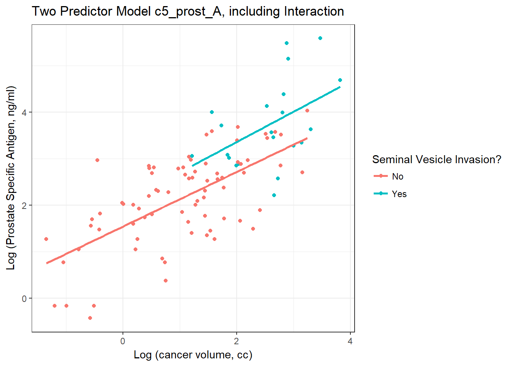
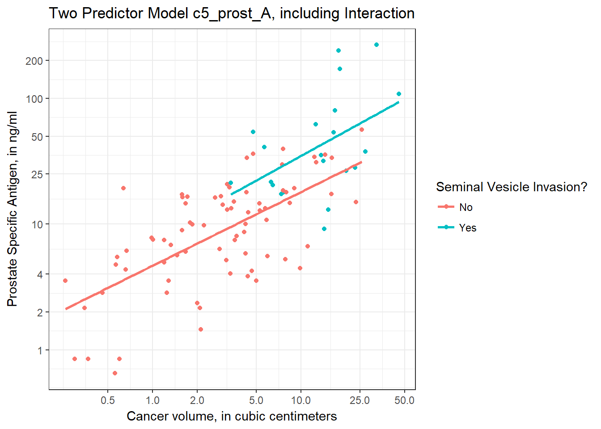
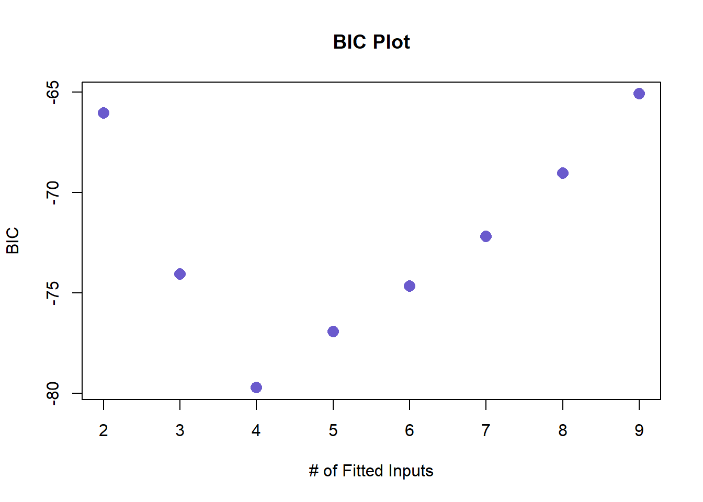

Chapter 5 Model Selection and a Prostate Cancer Study
5.1 Data Load and Background
The data in prost.csv is derived from Stamey and others (1989) who examined the relationship between the level of prostate-specific antigen and a number of clinical measures in 97 men who were about to receive a radical prostatectomy. The prost data, as I’ll name it in R, contains 97 rows and 11 columns.
prost# A tibble: 97 x 10
subject lpsa lcavol lweight age bph svi lcp gleason pgg45
<int> <dbl> <dbl> <dbl> <int> <fct> <int> <dbl> <fct> <int>
1 1 -0.431 -0.580 2.77 50 Low 0 -1.39 6 0
2 2 -0.163 -0.994 3.32 58 Low 0 -1.39 6 0
3 3 -0.163 -0.511 2.69 74 Low 0 -1.39 7 20
4 4 -0.163 -1.20 3.28 58 Low 0 -1.39 6 0
5 5 0.372 0.751 3.43 62 Low 0 -1.39 6 0
6 6 0.765 -1.05 3.23 50 Low 0 -1.39 6 0
7 7 0.765 0.737 3.47 64 Medium 0 -1.39 6 0
8 8 0.854 0.693 3.54 58 High 0 -1.39 6 0
9 9 1.05 -0.777 3.54 47 Low 0 -1.39 6 0
10 10 1.05 0.223 3.24 63 Low 0 -1.39 6 0
# ... with 87 more rowsNote that a related prost data frame is also available as part of several R packages, including the faraway package, but there is an error in the lweight data for subject 32 in those presentations. The value of lweight for subject 32 should not be 6.1, corresponding to a prostate that is 449 grams in size, but instead the lweight value should be 3.804438, corresponding to a 44.9 gram prostate6.
I’ve also changed the gleason and bph variables from their presentation in other settings, to let me teach some additional details.
5.2 Code Book
| Variable | Description |
|---|---|
subject |
subject number (1 to 97) |
lpsa |
log(prostate specific antigen in ng/ml), our outcome |
lcavol |
log(cancer volume in cm3) |
lweight |
log(prostate weight, in g) |
age |
age |
bph |
benign prostatic hyperplasia amount (Low, Medium, or High) |
svi |
seminal vesicle invasion (1 = yes, 0 = no) |
lcp |
log(capsular penetration, in cm) |
gleason |
combined Gleason score (6, 7, or > 7 here) |
pgg45 |
percentage Gleason scores 4 or 5 |
Notes:
- in general, higher levels of PSA are stronger indicators of prostate cancer. An old standard (established almost exclusively with testing in white males, and definitely flawed) suggested that values below 4 were normal, and above 4 needed further testing. A PSA of 4 corresponds to an
lpsaof 1.39. - all logarithms are natural (base e) logarithms, obtained in R with the function
log() - all variables other than
subjectandlpsaare candidate predictors - the
gleasonvariable captures the highest combined Gleason score7 in a biopsy, and higher scores indicate more aggressive cancer cells. It’s stored here as 6, 7, or > 7. - the
pgg45variable captures the percentage of individual Gleason scores8 that are 4 or 5, on a 1-5 scale, where higher scores indicate more abnormal cells.
5.3 Additions for Later Use
The code below adds to the prost tibble:
- a factor version of the
svivariable, calledsvi_f, with levels No and Yes, - a factor version of
gleasoncalledgleason_f, with the levels ordered > 7, 7, and finally 6, - a factor version of
bphcalledbph_f, with levels ordered Low, Medium, High, - a centered version of
lcavolcalledlcavol_c, - exponentiated
cavolandpsaresults derived from the natural logarithmslcavolandlpsa.
prost <- prost %>%
mutate(svi_f = fct_recode(factor(svi), "No" = "0", "Yes" = "1"),
gleason_f = fct_relevel(gleason, c("> 7", "7", "6")),
bph_f = fct_relevel(bph, c("Low", "Medium", "High")),
lcavol_c = lcavol - mean(lcavol),
cavol = exp(lcavol),
psa = exp(lpsa))
glimpse(prost)Observations: 97
Variables: 16
$ subject <int> 1, 2, 3, 4, 5, 6, 7, 8, 9, 10, 11, 12, 13, 14, 15, 1...
$ lpsa <dbl> -0.4307829, -0.1625189, -0.1625189, -0.1625189, 0.37...
$ lcavol <dbl> -0.5798185, -0.9942523, -0.5108256, -1.2039728, 0.75...
$ lweight <dbl> 2.769459, 3.319626, 2.691243, 3.282789, 3.432373, 3....
$ age <int> 50, 58, 74, 58, 62, 50, 64, 58, 47, 63, 65, 63, 63, ...
$ bph <fct> Low, Low, Low, Low, Low, Low, Medium, High, Low, Low...
$ svi <int> 0, 0, 0, 0, 0, 0, 0, 0, 0, 0, 0, 0, 0, 0, 0, 0, 0, 0...
$ lcp <dbl> -1.3862944, -1.3862944, -1.3862944, -1.3862944, -1.3...
$ gleason <fct> 6, 6, 7, 6, 6, 6, 6, 6, 6, 6, 6, 6, 7, 7, 7, 6, 7, 6...
$ pgg45 <int> 0, 0, 20, 0, 0, 0, 0, 0, 0, 0, 0, 0, 30, 5, 5, 0, 30...
$ svi_f <fct> No, No, No, No, No, No, No, No, No, No, No, No, No, ...
$ gleason_f <fct> 6, 6, 7, 6, 6, 6, 6, 6, 6, 6, 6, 6, 7, 7, 7, 6, 7, 6...
$ bph_f <fct> Low, Low, Low, Low, Low, Low, Medium, High, Low, Low...
$ lcavol_c <dbl> -1.9298281, -2.3442619, -1.8608352, -2.5539824, -0.5...
$ cavol <dbl> 0.56, 0.37, 0.60, 0.30, 2.12, 0.35, 2.09, 2.00, 0.46...
$ psa <dbl> 0.65, 0.85, 0.85, 0.85, 1.45, 2.15, 2.15, 2.35, 2.85...5.4 Fit Model A: Two Predictors
To begin, let’s use two predictors (lcavol and svi) and their interaction in a linear regression model that predicts lpsa. I’ll call this model c5_prost_A
Earlier, we centered the lcavol values to facilitate interpretation of the terms. I’ll use that centered version (called lcavol_c) of the quantitative predictor, and the 1/0 version of the svi variable9.
c5_prost_A <- lm(lpsa ~ lcavol_c * svi, data = prost)
summary(c5_prost_A)
Call:
lm(formula = lpsa ~ lcavol_c * svi, data = prost)
Residuals:
Min 1Q Median 3Q Max
-1.6305 -0.5007 0.1266 0.4886 1.6847
Coefficients:
Estimate Std. Error t value Pr(>|t|)
(Intercept) 2.33134 0.09128 25.540 < 2e-16 ***
lcavol_c 0.58640 0.08207 7.145 1.98e-10 ***
svi 0.60132 0.35833 1.678 0.0967 .
lcavol_c:svi 0.06479 0.26614 0.243 0.8082
---
Signif. codes: 0 '***' 0.001 '**' 0.01 '*' 0.05 '.' 0.1 ' ' 1
Residual standard error: 0.7595 on 93 degrees of freedom
Multiple R-squared: 0.5806, Adjusted R-squared: 0.5671
F-statistic: 42.92 on 3 and 93 DF, p-value: < 2.2e-165.4.1 Using tidy
It can be very useful to build a data frame of the model’s results. We can use the tidy function in the broom package to do so.
tidy(c5_prost_A) term estimate std.error statistic p.value
1 (Intercept) 2.33134409 0.09128253 25.5398727 8.246849e-44
2 lcavol_c 0.58639599 0.08206929 7.1451331 1.981492e-10
3 svi 0.60131973 0.35832695 1.6781314 9.667899e-02
4 lcavol_c:svi 0.06479298 0.26614194 0.2434527 8.081909e-01This makes it much easier to pull out individual elements of the model fit.
For example, to specify the coefficient for svi, rounded to three decimal places, I could use tidy(c5_prost_A) %>% filter(term == "svi") %>% select(estimate) %>% round(., 3)
- The result is 0.601.
- If you look at the Markdown file, you’ll see that the number shown in the bullet point above this one was generated using inline R code, and the function specified above.
5.4.2 Interpretation
- The intercept, 2.33, for the model is the predicted value of
lpsawhenlcavolis at its average and there is no seminal vesicle invasion (e.g.svi= 0). - The coefficient for
lcavol_c, 0.59, is the predicted change inlpsaassociated with a one unit increase inlcavol(orlcavol_c) when there is no seminal vesicle invasion. - The coefficient for
svi, 0.60, is the predicted change inlpsaassociated with having nosvito having ansviwhile thelcavolremains at its average. - The coefficient for
lcavol_c:svi, the product term, which is 0.06, is the difference in the slope oflcavol_cfor a subject withsvias compared to one with nosvi.
Note: If you look at the R Markdown, you’ll notice that in bullet point 3, I didn’t use round to round off the estimate (as I did in the other three bullets), but instead a special function I specified at the start of the R Markdown file called specify_decimal() which uses the format function. This forces, in this case, the trailing zero in the two decimal representation of the svi coefficient to be shown. The special function, again, is:
specify_decimal <- function(x, k) format(round(x, k), nsmall=k)
5.5 Exploring Model c5_prost_A
The glance function from the broom package builds a nice one-row summary for the model.
glance(c5_prost_A) r.squared adj.r.squared sigma statistic p.value df logLik
1 0.5806435 0.5671158 0.7594785 42.92278 1.678836e-17 4 -108.9077
AIC BIC deviance df.residual
1 227.8153 240.6889 53.64311 93This summary includes, in order,
- the model \(R^2\), adjusted \(R^2\) and \(\hat{\sigma}\), the residual standard deviation,
- the ANOVA F statistic and associated p value,
- the number of degrees of freedom used by the model, and its log-likelihood ratio
- the model’s AIC (Akaike Information Criterion) and BIC (Bayesian Information Criterion)
- the model’s deviance statistic and residual degrees of freedom
5.5.1 summary for Model c5_prost_A
If necessary, we can also run summary on this c5_prost_A object to pick up some additional summaries. Since the svi variable is binary, the interaction term is, too, so the t test here and the F test in the ANOVA yield the same result.
summary(c5_prost_A)
Call:
lm(formula = lpsa ~ lcavol_c * svi, data = prost)
Residuals:
Min 1Q Median 3Q Max
-1.6305 -0.5007 0.1266 0.4886 1.6847
Coefficients:
Estimate Std. Error t value Pr(>|t|)
(Intercept) 2.33134 0.09128 25.540 < 2e-16 ***
lcavol_c 0.58640 0.08207 7.145 1.98e-10 ***
svi 0.60132 0.35833 1.678 0.0967 .
lcavol_c:svi 0.06479 0.26614 0.243 0.8082
---
Signif. codes: 0 '***' 0.001 '**' 0.01 '*' 0.05 '.' 0.1 ' ' 1
Residual standard error: 0.7595 on 93 degrees of freedom
Multiple R-squared: 0.5806, Adjusted R-squared: 0.5671
F-statistic: 42.92 on 3 and 93 DF, p-value: < 2.2e-16If you’ve forgotten the details of the pieces of this summary, review the Part C Notes from 431.
5.5.2 Adjusted R2
R2 is greedy.
- R2 will always suggest that we make our models as big as possible, often including variables of dubious predictive value.
- As a result, there are various methods for penalizing R2 so that we wind up with smaller models.
- The adjusted R2 is often a useful way to compare multiple models for the same response.
- \(R^2_{adj} = 1 - \frac{(1-R^2)(n - 1)}{n - k}\), where \(n\) = the number of observations and \(k\) is the number of coefficients estimated by the regression (including the intercept and any slopes).
- So, in this case, \(R^2_{adj} = 1 - \frac{(1 - 0.5806)(97 - 1)}{97 - 4} = 0.5671\)
- The adjusted R2 value is not, technically, a proportion of anything, but it is comparable across models for the same outcome.
- The adjusted R2 will always be less than the (unadjusted) R2.
5.5.3 Coefficient Confidence Intervals
Here are the 90% confidence intervals for the coefficients in Model A. Adjust the level to get different intervals.
confint(c5_prost_A, level = 0.90) 5 % 95 %
(Intercept) 2.17968697 2.4830012
lcavol_c 0.45004577 0.7227462
svi 0.00599401 1.1966454
lcavol_c:svi -0.37737623 0.5069622What can we conclude from this about the utility of the interaction term?
5.5.4 ANOVA for Model c5_prost_A
The interaction term appears unnecessary. We might wind up fitting the model without it. A complete ANOVA test is available, including a p value, if you want it.
anova(c5_prost_A)Analysis of Variance Table
Response: lpsa
Df Sum Sq Mean Sq F value Pr(>F)
lcavol_c 1 69.003 69.003 119.6289 < 2.2e-16 ***
svi 1 5.237 5.237 9.0801 0.003329 **
lcavol_c:svi 1 0.034 0.034 0.0593 0.808191
Residuals 93 53.643 0.577
---
Signif. codes: 0 '***' 0.001 '**' 0.01 '*' 0.05 '.' 0.1 ' ' 1Note that the anova approach for a lm object is sequential. The first row shows the impact of lcavol_c as compared to a model with no predictors (just an intercept). The second row shows the impact of adding svi to a model that already contains lcavol_c. The third row shows the impact of adding the interaction (product) term to the model with the two main effects. So the order in which the variables are added to the regression model matters for this ANOVA. The F tests here describe the incremental impact of each covariate in turn.
5.5.5 Residuals, Fitted Values and Standard Errors with augment
The augment function in the broom package builds a data frame including the data used in the model, along with predictions (fitted values), residuals and other useful information.
c5_prost_A_frame <- augment(c5_prost_A) %>% tbl_df
skim(c5_prost_A_frame)Skim summary statistics
n obs: 97
n variables: 10
Variable type: integer
variable missing complete n mean sd p0 p25 median p75 p100
svi 0 97 97 0.22 0.41 0 0 0 0 1
Variable type: numeric
variable missing complete n mean sd p0 p25 median
.cooksd 0 97 97 0.011 0.02 6.9e-06 0.00078 0.0035
.fitted 0 97 97 2.48 0.88 0.75 1.84 2.4
.hat 0 97 97 0.041 0.041 0.013 0.016 0.025
.resid 0 97 97 -6.9e-17 0.75 -1.63 -0.5 0.13
.se.fit 0 97 97 0.14 0.061 0.087 0.095 0.12
.sigma 0 97 97 0.76 0.0052 0.74 0.76 0.76
.std.resid 0 97 97 0.0012 1.01 -2.19 -0.69 0.17
lcavol_c 0 97 97 5.4e-17 1.18 -2.7 -0.84 0.097
lpsa 0 97 97 2.48 1.15 -0.43 1.73 2.59
p75 p100
0.01 0.13
3.07 4.54
0.049 0.25
0.49 1.68
0.17 0.38
0.76 0.76
0.65 2.26
0.78 2.47
3.06 5.58Elements shown here include:
.fittedFitted values of model (or predicted values).se.fitStandard errors of fitted values.residResiduals (observed - fitted values).hatDiagonal of the hat matrix (these indicate leverage - points with high leverage indicate unusual combinations of predictors - values more than 2-3 times the mean leverage are worth some study - leverage is always between 0 and 1, and measures the amount by which the predicted value would change if the observation’s y value was increased by one unit - a point with leverage 1 would cause the line to follow that point perfectly).sigmaEstimate of residual standard deviation when corresponding observation is dropped from model.cooksdCook’s distance, which helps identify influential points (values of Cook’s d > 0.5 may be influential, values > 1.0 almost certainly are - an influential point changes the fit substantially when it is removed from the data).std.residStandardized residuals (values above 2 in absolute value are worth some study - treat these as normal deviates [Z scores], essentially)
See ?augment.lm in R for more details.
5.5.6 Making Predictions with c5_prost_A
Suppose we want to predict the lpsa for a patient with cancer volume equal to this group’s mean, for both a patient with and without seminal vesicle invasion, and in each case, we want to use a 90% prediction interval?
newdata <- data.frame(lcavol_c = c(0,0), svi = c(0,1))
predict(c5_prost_A, newdata, interval = "prediction", level = 0.90) fit lwr upr
1 2.331344 1.060462 3.602226
2 2.932664 1.545742 4.319586Since the predicted value in fit refers to the natural logarithm of PSA, to make the predictions in terms of PSA, we would need to exponentiate. The code below will accomplish that task.
pred <- predict(c5_prost_A, newdata, interval = "prediction", level = 0.90)
exp(pred) fit lwr upr
1 10.29177 2.887706 36.67978
2 18.77758 4.691450 75.157505.6 Plotting Model c5_prost_A
5.6.0.1 Plot logs conventionally
Here, we’ll use ggplot2 to plot the logarithms of the variables as they came to us, on a conventional coordinate scale. Note that the lines are nearly parallel. What does this suggest about our Model A?
ggplot(prost, aes(x = lcavol, y = lpsa, group = svi_f, color = svi_f)) +
geom_point() +
geom_smooth(method = "lm", se = FALSE) +
scale_color_discrete(name = "Seminal Vesicle Invasion?") +
theme_bw() +
labs(x = "Log (cancer volume, cc)",
y = "Log (Prostate Specific Antigen, ng/ml)",
title = "Two Predictor Model c5_prost_A, including Interaction")
5.6.0.2 Plot on log-log scale
Another approach (which might be easier in some settings) would be to plot the raw values of Cancer Volume and PSA, but use logarithmic axes, again using the natural (base e) logarithm, as follows. If we use the default choice with `trans = “log”, we’ll find a need to select some useful break points for the grid, as I’ve done in what follows.
ggplot(prost, aes(x = cavol, y = psa, group = svi_f, color = svi_f)) +
geom_point() +
geom_smooth(method = "lm", se = FALSE) +
scale_color_discrete(name = "Seminal Vesicle Invasion?") +
scale_x_continuous(trans = "log",
breaks = c(0.5, 1, 2, 5, 10, 25, 50)) +
scale_y_continuous(trans = "log",
breaks = c(1, 2, 4, 10, 25, 50, 100, 200)) +
theme_bw() +
labs(x = "Cancer volume, in cubic centimeters",
y = "Prostate Specific Antigen, in ng/ml",
title = "Two Predictor Model c5_prost_A, including Interaction")
I’ve used the break point of 4 on the Y axis because of the old rule suggesting further testing for asymptomatic men with PSA of 4 or higher, but the other break points are arbitrary - they seemed to work for me, and used round numbers.
5.6.1 Residual Plots of c5_prost_A
plot(c5_prost_A, which = 1)
plot(c5_prost_A, which = 5)
5.7 Strategy for Model Selection
F. L. Ramsey and Schafer (2002) suggest a strategy for dealing with many potential explanatory variables should include the following elements:
- Identify the key objectives.
- Screen the available variables, deciding on a list that is sensitive to the objectives and excludes obvious redundancies.
- Perform exploratory analysis, examining graphical displays and correlation coefficients.
- Perform transformations, as necessary.
- Examine a residual plot after fitting a rich model, performing further transformations and considering outliers.
- Find a suitable subset of the predictors, exerting enough control over any semi-automated selection procedure to be sensitive to the questions of interest.
- Proceed with the analysis, using the selected explanatory variables.
The Two Key Aspects of Model Selection are:
- Evaluating each potential subset of predictor variables
- Deciding on the collection of potential subsets
5.7.1 How Do We Choose Potential Subsets of Predictors?
Choosing potential subsets of predictor variables usually involves either:
- Stepwise approaches
- All possible subset (or best possible subset) searches
Note that the use of any variable selection procedure changes the properties of …
- the estimated coefficients, which are biased, and
- the associated tests and confidence intervals, which are overly optimistic.
Leeb and Potscher (2005) summarize the key issues:
- Regardless of sample size, the model selection step typically has a dramatic effect on the sampling properties of the estimators that cannot be ignored. In particular, the sampling properties of post-model-selection estimators are typically significantly different from the nominal distributions that arise if a fixed model is supposed.
- As a consequence, use of inference procedures that do not take into account the model selection step (e.g. using standard t-intervals as if the selected model has been given prior to the statistical analysis) can be highly misleading.
5.8 A “Kitchen Sink” Model (Model c5_prost_ks)
Suppose that we now consider a model which includes main effects (and, in this case, only the main effects) of all eight candidate predictors for lpsa, as follows.
c5_prost_ks <- lm(lpsa ~ lcavol + lweight + age + bph_f + svi_f +
lcp + gleason_f + pgg45, data = prost)
tidy(c5_prost_ks) term estimate std.error statistic p.value
1 (Intercept) 0.169937821 0.931332512 0.1824674 8.556454e-01
2 lcavol 0.544313829 0.087979210 6.1868461 2.010505e-08
3 lweight 0.702237531 0.203013089 3.4590751 8.455164e-04
4 age -0.023857982 0.011081414 -2.1529727 3.412099e-02
5 bph_fMedium 0.364036274 0.182575941 1.9938896 4.933267e-02
6 bph_fHigh 0.248789989 0.195975792 1.2694935 2.076898e-01
7 svi_fYes 0.710949408 0.241990241 2.9379259 4.240326e-03
8 lcp -0.119311781 0.089458946 -1.3337043 1.858223e-01
9 gleason_f7 0.220746268 0.343065609 0.6434520 5.216430e-01
10 gleason_f6 -0.053096704 0.430098039 -0.1234526 9.020368e-01
11 pgg45 0.003984574 0.004146495 0.9609499 3.392714e-01glance(c5_prost_ks) r.squared adj.r.squared sigma statistic p.value df logLik
1 0.6790343 0.6417127 0.6909479 18.19414 2.373796e-17 11 -95.93939
AIC BIC deviance df.residual
1 215.8788 246.7753 41.05718 86We’ll often refer to this (all predictors on board) approach as a “kitchen sink” model10.
5.9 Sequential Variable Selection: Stepwise Approaches
- Forward Selection
- We begin with a constant mean and then add potential predictors one at a time according to some criterion (R defaults to minimizing the Akaike Information Criterion) until no further addition significantly improves the fit.
- Each categorical factor variable is represented in the regression model as a set of indicator variables. In the absence of a good reason to do something else, the set is added to the model as a single unit, and R does this automatically.
- Backwards Elimination
- Start with the “kitchen sink” model and then delete potential predictors one at a time.
- Backwards Elimination is less likely than Forward Selection, to omit negatively confounded sets of variables, though all stepwise procedures have problems.
- Stepwise Regression can also be done by combining these methods.
5.9.1 The Big Problems with Stepwise Regression
There is no reason to assume that a single best model can be found.
- The use of forward selection, or backwards elimination, or stepwise regression including both procedures, will NOT always find the same model.
- It also appears to be essentially useless to try different stepwise methods to look for agreement.
Users of stepwise regression frequently place all of their attention on the particular explanatory variables included in the resulting model, when there’s no reason (in most cases) to assume that model is in any way optimal.
Despite all of its problems, let’s use stepwise regression to help predict lpsa given a subset of the eight predictors in c5_prost_ks.
5.9.2 Forward Selection with the step function
- Specify the null model (intercept only)
- Specify the variables R should consider as predictors (in the scope element of the step function)
- Specify forward selection only
- R defaults to using AIC as its stepwise criterion
with(prost,
step(lm(lpsa ~ 1),
scope=(~ lcavol + lweight + age + bph_f + svi_f +
lcp + gleason_f + pgg45),
direction="forward"))Start: AIC=28.84
lpsa ~ 1
Df Sum of Sq RSS AIC
+ lcavol 1 69.003 58.915 -44.366
+ svi_f 1 41.011 86.907 -6.658
+ lcp 1 38.528 89.389 -3.926
+ gleason_f 2 30.121 97.796 6.793
+ lweight 1 24.019 103.899 10.665
+ pgg45 1 22.814 105.103 11.783
+ age 1 3.679 124.239 28.007
<none> 127.918 28.838
+ bph_f 2 4.681 123.237 29.221
Step: AIC=-44.37
lpsa ~ lcavol
Df Sum of Sq RSS AIC
+ lweight 1 7.1726 51.742 -54.958
+ svi_f 1 5.2375 53.677 -51.397
+ bph_f 2 3.2994 55.615 -45.956
+ pgg45 1 1.6980 57.217 -45.203
+ gleason_f 2 2.7834 56.131 -45.061
<none> 58.915 -44.366
+ lcp 1 0.6562 58.259 -43.452
+ age 1 0.0025 58.912 -42.370
Step: AIC=-54.96
lpsa ~ lcavol + lweight
Df Sum of Sq RSS AIC
+ svi_f 1 5.1737 46.568 -63.177
+ pgg45 1 1.8158 49.926 -56.424
+ gleason_f 2 2.6770 49.065 -56.111
<none> 51.742 -54.958
+ lcp 1 0.8187 50.923 -54.506
+ age 1 0.6456 51.097 -54.176
+ bph_f 2 1.4583 50.284 -53.731
Step: AIC=-63.18
lpsa ~ lcavol + lweight + svi_f
Df Sum of Sq RSS AIC
<none> 46.568 -63.177
+ gleason_f 2 1.60467 44.964 -62.579
+ age 1 0.62301 45.945 -62.484
+ bph_f 2 1.50046 45.068 -62.354
+ pgg45 1 0.50069 46.068 -62.226
+ lcp 1 0.06937 46.499 -61.322
Call:
lm(formula = lpsa ~ lcavol + lweight + svi_f)
Coefficients:
(Intercept) lcavol lweight svi_fYes
-0.7772 0.5259 0.6618 0.6657 The resulting model, arrived at after three forward selection steps, includes lcavol, lweight and svi_f.
model.fs <- lm(lpsa ~ lcavol + lweight + svi_f,
data=prost)
summary(model.fs)$adj.r.squared[1] 0.6242063extractAIC(model.fs)[1] 4.00000 -63.17744The adjusted R2 value for this model is 0.624, and the AIC value used by the stepwise procedure is -63.18, on 4 effective degrees of freedom.
5.10 Backward Elimination using the step function
In this case, the backward elimination approach, using reduction in AIC for a criterion, comes to the same conclusion about the “best” model.
with(prost,
step(lm(lpsa ~ lcavol + lweight + age + bph_f +
svi_f + lcp + gleason_f + pgg45),
direction="backward"))Start: AIC=-61.4
lpsa ~ lcavol + lweight + age + bph_f + svi_f + lcp + gleason_f +
pgg45
Df Sum of Sq RSS AIC
- gleason_f 2 1.1832 42.240 -62.639
- pgg45 1 0.4409 41.498 -62.359
- lcp 1 0.8492 41.906 -61.409
<none> 41.057 -61.395
- bph_f 2 2.0299 43.087 -60.714
- age 1 2.2129 43.270 -58.303
- svi_f 1 4.1207 45.178 -54.118
- lweight 1 5.7123 46.769 -50.760
- lcavol 1 18.2738 59.331 -27.683
Step: AIC=-62.64
lpsa ~ lcavol + lweight + age + bph_f + svi_f + lcp + pgg45
Df Sum of Sq RSS AIC
- lcp 1 0.8470 43.087 -62.713
<none> 42.240 -62.639
- pgg45 1 1.2029 43.443 -61.916
- bph_f 2 2.2515 44.492 -61.602
- age 1 2.0730 44.313 -59.992
- svi_f 1 4.6431 46.884 -54.523
- lweight 1 5.5988 47.839 -52.566
- lcavol 1 21.4956 63.736 -24.736
Step: AIC=-62.71
lpsa ~ lcavol + lweight + age + bph_f + svi_f + pgg45
Df Sum of Sq RSS AIC
- pgg45 1 0.5860 43.673 -63.403
<none> 43.087 -62.713
- bph_f 2 2.0214 45.109 -62.266
- age 1 1.7101 44.798 -60.938
- svi_f 1 3.7964 46.884 -56.523
- lweight 1 5.6462 48.734 -52.769
- lcavol 1 22.5152 65.603 -23.936
Step: AIC=-63.4
lpsa ~ lcavol + lweight + age + bph_f + svi_f
Df Sum of Sq RSS AIC
<none> 43.673 -63.403
- bph_f 2 2.2720 45.945 -62.484
- age 1 1.3945 45.068 -62.354
- svi_f 1 5.2747 48.948 -54.343
- lweight 1 5.3319 49.005 -54.230
- lcavol 1 25.5538 69.227 -20.720
Call:
lm(formula = lpsa ~ lcavol + lweight + age + bph_f + svi_f)
Coefficients:
(Intercept) lcavol lweight age bph_fMedium
0.14329 0.54022 0.67283 -0.01819 0.37607
bph_fHigh svi_fYes
0.27216 0.68174 The backwards elimination approach in this case lands on a model with five inputs (one of which includes two bph indicators,) eliminating only gleason_f, pgg45 and lcp.
5.11 Allen-Cady Modified Backward Elimination
Ranking candidate predictors by importance in advance of backwards elimination can help avoid false-positives, while reducing model size. See Vittinghoff et al. (2012), Section 10.3 for more details.
- First, force into the model any predictors of primary interest, and any confounders necessary for face validity of the final model.
- “Some variables in the hypothesized causal model may be such well-established causal antecedents of the outcome that it makes sense to include them, essentially to establish the face validity of the model and without regard to the strength or statistical significance of their associations with the primary predictor and outcome …”
- Rank the remaining candidate predictors in order of importance.
- Starting from an initial model with all candidate predictors included, delete predictors in order of ascending importance until the first variable meeting a criterion to stay in the model hits. Then stop.
Only the remaining variable hypothesized to be least important is eligible for removal at each step. When we are willing to do this sorting before collecting (or analyzing) the data, then we can do Allen-Cady backwards elimination using the drop1 command in R.
5.11.1 Demonstration of the Allen-Cady approach
Suppose, for the moment that we decided to fit a model for the log of psa and we decided (before we saw the data) that we would:
lcavol + lweight + svi_f + age + bph_f + gleason_f + lcp + pgg45
- force the
gleason_fvariable to be in the model, due to prior information about its importance, - and then rated the importance of the other variables as
lcavol(most important), thensvi_fthenage, and thenbph_f, thenlweightandlcpfollowed bypgg45(least important)
When we are willing to do this sorting before collecting (or analyzing) the data, then we can do Allen-Cady backwards elimination using the drop1 command in R.
Step 1. Fit the full model, then see if removing lweight improves AIC…
with(prost, drop1(lm(lpsa ~ gleason_f + lcavol + svi_f +
age + bph_f + lweight + lcp + pgg45),
scope = (~ pgg45)))Single term deletions
Model:
lpsa ~ gleason_f + lcavol + svi_f + age + bph_f + lweight + lcp +
pgg45
Df Sum of Sq RSS AIC
<none> 41.057 -61.395
pgg45 1 0.44085 41.498 -62.359Since -62.3 is smaller (i.e. more negative) than -61.4, we delete pgg45 and move on to assess whether we can remove the variable we deemed next least important (lcp)
Step 2. Let’s see if removing lcp from this model improves AIC…
with(prost, drop1(lm(lpsa ~ gleason_f + lcavol + svi_f +
age + bph_f + lweight + lcp),
scope = (~ lcp)))Single term deletions
Model:
lpsa ~ gleason_f + lcavol + svi_f + age + bph_f + lweight + lcp
Df Sum of Sq RSS AIC
<none> 41.498 -62.359
lcp 1 0.56767 42.066 -63.041Again, since -63.0 is smaller than -62.4, we delete lcp and next assess whether we should delete lweight.
Step 3. Does removing lweight from this model improves AIC…
with(prost, drop1(lm(lpsa ~ gleason_f + lcavol + svi_f +
age + bph_f + lweight),
scope = (~ lweight)))Single term deletions
Model:
lpsa ~ gleason_f + lcavol + svi_f + age + bph_f + lweight
Df Sum of Sq RSS AIC
<none> 42.066 -63.041
lweight 1 5.678 47.744 -52.760Since the AIC for the model after the removal of lweight is larger (i.e. less negative), we stop, and declare our final model by the Allen-Cady approach to include gleason_f, lcavol, svi_f, age, bph_f and lweight.
5.12 “All Subsets” or “Best Subsets” Approaches to Model Selection
A second approach to model selection involved fitting all possible subset models and identifying the ones that look best according to some meaningful criterion and ideally one that includes enough variables to model the response appropriately without including lots of redundant or unnecessary terms.
Several useful tools for running “all subsets” or “best subsets” regression comparisons are developed in R’s leaps package.
5.12.1 Four Key Summaries We’ll Use to Evaluate Potential Models
- Adjusted R2, which we try to maximize.
- Akaike’s Information Criterion (AIC), which we try to minimize, and a Bias-Corrected version of AIC due to Hurwitz and Tsai, which we use when the sample size is small, specifically when the sample size \(n\) and the number of predictors being studied \(k\) are such that \(n/k \leq 40\). We also try to minimize this bias-corrected AIC.
- Bayesian Information Criterion (BIC), which we also try to minimize.
- Mallows’ Cp statistic, which we (essentially) try to minimize.
Choosing between AIC and BIC can be challenging.
For model selection purposes, there is no clear choice between AIC and BIC. Given a family of models, including the true model, the probability that BIC will select the correct model approaches one as the sample size n approaches infinity - thus BIC is asymptotically consistent, which AIC is not. [But, for practical purposes,] BIC often chooses models that are too simple [relative to AIC] because of its heavy penalty on complexity.
- Source: Hastie, Tibshriani, and Frideman (2001), page 208.
5.13 Using regsubsets in the leaps package
We will use the leaps package in R as follows to obtain results in the prost study from looking at all possible subsets of the candidate predictors. To start, we’ll ask R to find the one best subset (with 1 input [in addition to the intercept], then with 2 inputs, and then with each of 3, 4, … 8 regression inputs) according to an exhaustive search without forcing any of the variables to be in or out. We’d use the nvmax command within the regsubsets function to limit the number of regression inputs to a maximum.
## requires leaps package
preds <- with(prost,
cbind(lcavol, lweight, age, bph_f, svi_f, lcp, gleason_f, pgg45))
x1 <- regsubsets(preds, y=prost$lpsa)
rs <- summary(x1)
rsSubset selection object
8 Variables (and intercept)
Forced in Forced out
lcavol FALSE FALSE
lweight FALSE FALSE
age FALSE FALSE
bph_f FALSE FALSE
svi_f FALSE FALSE
lcp FALSE FALSE
gleason_f FALSE FALSE
pgg45 FALSE FALSE
1 subsets of each size up to 8
Selection Algorithm: exhaustive
lcavol lweight age bph_f svi_f lcp gleason_f pgg45
1 ( 1 ) "*" " " " " " " " " " " " " " "
2 ( 1 ) "*" "*" " " " " " " " " " " " "
3 ( 1 ) "*" "*" " " " " "*" " " " " " "
4 ( 1 ) "*" "*" " " "*" "*" " " " " " "
5 ( 1 ) "*" "*" "*" "*" "*" " " " " " "
6 ( 1 ) "*" "*" "*" "*" "*" " " "*" " "
7 ( 1 ) "*" "*" "*" "*" "*" "*" "*" " "
8 ( 1 ) "*" "*" "*" "*" "*" "*" "*" "*" So…
- the best one-predictor model used
lcavol - the best two-predictor model used
lcavolandlweight - the best three-predictor model used
lcavol,lweightandsvi_f - the best four-predictor model added
bph_f, and - the best five-predictor model added
age - the best six-input model added
gleason_f, - the best seven-input model added
lcp, - and the eight-input model adds
pgg45.
5.13.1 Summaries of “Winning” Models
We can easily pull out R2, adjusted R2, Cp, and BIC results for the “winning” models of each size.
winners <- tbl_df(rs$which)
winners$k <- 2:9
winners$r2 <- rs$rsq
winners$adjr2 <- rs$adjr2
winners$cp <- rs$cp
winners$bic <- rs$bicAnd here is a table of those results…
winners# A tibble: 8 x 14
`(Intercept)` lcavol lweight age bph_f svi_f lcp gleason_f pgg45
<lgl> <lgl> <lgl> <lgl> <lgl> <lgl> <lgl> <lgl> <lgl>
1 T T F F F F F F F
2 T T T F F F F F F
3 T T T F F T F F F
4 T T T F T T F F F
5 T T T T T T F F F
6 T T T T T T F T F
7 T T T T T T T T F
8 T T T T T T T T T
# ... with 5 more variables: k <int>, r2 <dbl>, adjr2 <dbl>, cp <dbl>, bic
# <dbl>- All of these “best subsets” are hierarchical, in that each model is a subset of the one below it. This isn’t inevitably true.
- By adjusted R2, which we want to maximize, the best model appears to be the model with \(k\) = 8.
- By Cp, which we want to minimize (within reason), the best choice appears to be the \(k\) = 4, 6 or 7 model.
- By BIC, the best model has \(k\) = 4.
5.14 Plotting the Best Subsets Results
5.14.1 The Adjusted R2 Plot
plot(rs$adjr2 ~ I(2:9), ylab="Adjusted R-squared",
xlab="# of Inputs, including intercept")
lines(spline(rs$adjr2 ~ I(2:9)))
Models 4-9 all look like reasonable choices here.
5.14.2 A Fancier Version (identifying the largest adjusted R2)
m2 <- max(rs$adjr2)
m1 <- which.max(rs$adjr2) + 1
plot(rs$adjr2 ~ I(2:9), ylab="Adjusted R-squared",
xlab="# of Inputs, including intercept")
lines(spline(rs$adjr2 ~ I(2:9)))
arrows(m1, m2-0.02, m1, m2)
text(m1, m2-0.03, paste("max =", format(m2, digits=3)))
text(m1, m2-0.045, paste("with", format(m1, digits=1),
"inputs"), pos=3)
5.15 Mallows’ \(C_p\)
The \(C_p\) statistic focuses directly on the tradeoff between bias (due to excluding important predictors from the model) and extra variance (due to including too many unimportant predictors in the model.)
If N is the sample size, and we select \(p\) regression predictors from a set of \(K\) (where \(p < K\)), then the \(C_p\) statistic is
\(C_p = \frac{SSE_p}{MSE_K} - N + 2p\)
where:
- \(SSE_p\) is the sum of squares for error (residual) in the model with \(p\) predictors
- \(MSE_K\) is the residual mean square after regression in the model with all \(K\) predictors
As it turns out, this is just measuring the particular model’s lack of fit, and then adding a penalty for the number of terms in the model (specifically \(2p - N\) is the penalty since the lack of fit is measured as \((N-p) \frac{SSE_p}{MSE_K}\).
If a model has no meaningful lack of fit (i.e. no substantial bias) then the expected value of \(C_p\) is roughly \(p\).
Otherwise, the expectation is \(p\) plus a positive bias term.
In general, we want to see smaller values of \(C_p\).
Often, we do this by choosing a subset of predictors that have \(C_p\) near the value of \(p\).
5.15.1 The \(C_p\) Plot
The \(C_p\) plot is just a scatterplot of \(C_p\) on the Y-axis, and \(p\) on the X-axis.
Each of the various predictor subsets we will study is represented in a single point. A model without bias should have \(C_p\) roughly equal to \(p\), so we’ll frequently draw a line at \(C_p = p\) to make that clear. We then select our model from among all models with small \(C_p\) statistics.
plot(rs$cp ~ I(2:9),
ylab="Cp Statistic",
xlab="# of Regression Inputs, including Intercept",
pch=16, main="Cp Plot")
abline(0,1, col = "purple")
Model 4 has the smallest value of \(C_p\) (and is the leftmost of the largely comparable models 4-9) while 6 is close to and 7 is right on the \(C_p = p\) line, so those are the likeliest candidates.
5.16 “All Subsets” Regression and Information Criteria
We will have three main information criteria:
- the Bayesian Information Criterion, called BIC
- the Akaike Information Criterion (used by R’s default stepwise approaches,) called AIC
- a corrected version of AIC due to Hurwitz and Tsai, called AICc
Each of these indicates better models by getting smaller.
5.16.1 The BIC Plot
R provides the BIC directly as part of the result of running regsubsets, as we’ve seen.
plot(rs$bic ~ I(2:9), ylab="BIC", xlab="# of Fitted Inputs",
pch=16, cex=1.5, col="slateblue", main="BIC Plot")
We want to minimize BIC, which argues strongly for the model with 4 inputs, including the intercept.
5.16.2 AIC with “All Subsets”
To get the AIC, we can use the formula
\[ AIC = n log(RSS/n) + 2p \]
where n is the sample size, p = # of regression inputs to be fit in the model (including the intercept) and the RSS can be found in the regsubsets output:
rs$rss[1] 58.91478 51.74218 46.56844 45.72444 44.64364 43.69047 43.04471 42.77150So, in our case, we have n = 97 subjects, and models being fit with 2 to 9 regression inputs (including the intercept), so we have:
rs$aic <- 97*log(rs$rss / 97) + 2*(2:9)
rs$aic[1] -44.36603 -54.95846 -63.17744 -62.95157 -63.27191 -63.36534 -62.80974
[8] -61.427385.16.3 The Bias-Corrected AIC (Hurwitz & Tsai)
The bias-corrected AIC formula due to Hurwitz and Tsai is:
\(AIC_c\) = n log(RSS/n) + 2p + [2p (p+1) / (n-p-1)] = AIC + [2p (p+1) / (n-p-1)]
rs$aic.corr <- 97*log(rs$rss / 97) + 2*(2:9) +
(2 * (2:9) * ((2:9)+1) / (97 - (2:9) - 1))
round(rs$aic,2) # uncorrected [1] -44.37 -54.96 -63.18 -62.95 -63.27 -63.37 -62.81 -61.43round(rs$aic.corr,2) # bias-corrected[1] -44.24 -54.70 -62.74 -62.29 -62.34 -62.11 -61.17 -59.36plot(rs$aic.corr ~ I(2:9), ylab="AIC, corrected", xlab="# of Fitted Inputs",
pch=16, cex=1.5, col="tomato", main="AIC (corrected) Plot")The smallest AICc values occur in models 4 and later, especially model 4 itself.
5.17 Table of Key Results
We can build a big table, like this:
winners <- data_frame(inputs = 2:9)
winners$r2 <- rs$rsq
winners$adjr2 <- rs$adjr2
winners$cp <- rs$cp
winners$bic <- rs$bic
winners$aic <- rs$aic
winners$aic.corr <- rs$aic.corr
pander(round(winners, 3))| inputs | r2 | adjr2 | cp | bic | aic | aic.corr |
|---|---|---|---|---|---|---|
| 2 | 0.539 | 0.535 | 28.21 | -66.05 | -44.37 | -44.24 |
| 3 | 0.596 | 0.587 | 15.46 | -74.07 | -54.96 | -54.7 |
| 4 | 0.636 | 0.624 | 6.812 | -79.72 | -63.18 | -62.74 |
| 5 | 0.643 | 0.627 | 7.076 | -76.92 | -62.95 | -62.29 |
| 6 | 0.651 | 0.632 | 6.852 | -74.66 | -63.27 | -62.34 |
| 7 | 0.658 | 0.636 | 6.891 | -72.18 | -63.37 | -62.11 |
| 8 | 0.663 | 0.637 | 7.562 | -69.05 | -62.81 | -61.17 |
| 9 | 0.666 | 0.635 | 9 | -65.09 | -61.43 | -59.36 |
5.18 All Four Plots, Together
par(mfrow = c(2,2))
m2 <- max(rs$adjr2)
m1 <- which.max(rs$adjr2) + 1
plot(rs$adjr2 ~ I(2:9), ylab="Adjusted R-squared",
xlab="# of Inputs, including intercept",
main = "Adjusted R-squared")
lines(spline(rs$adjr2 ~ I(2:9)))
arrows(m1, m2-0.02, m1, m2)
text(m1, m2-0.03, paste("max =", format(m2, digits=3)))
text(m1, m2-0.045, paste("with", format(m1, digits=1),
"inputs"), pos=3)
plot(rs$cp ~ I(2:9),
ylab="Cp Statistic",
xlab="# of Regression Inputs, including Intercept",
pch=16, main="Cp Plot")
abline(0,1, col = "purple")
rs$aic.corr <- 97*log(rs$rss / 97) + 2*(2:9) +
(2 * (2:9) * ((2:9)+1) / (97 - (2:9) - 1))
plot(rs$aic.corr ~ I(2:9), ylab="AIC, corrected", xlab="# of Fitted Inputs",
pch=16, cex=1.5, col="tomato", main="AIC (corrected) Plot")
plot(rs$bic ~ I(2:9), ylab="BIC", xlab="# of Fitted Inputs",
pch=16, cex=1.5, col="slateblue", main="BIC Plot")
par(mfrow = c(1,1))5.19 Labelled “Best Subsets” Adjusted R2 Plot
## requires leaps package
preds <- with(prost,
cbind(lcavol, lweight, age, bph_f, svi_f, lcp, gleason_f, pgg45))
x1 <- regsubsets(preds, y=prost$lpsa)
## requires car package
car::subsets(x1, statistic=c("adjr2"), legend="bottomright")
5.20 Labelled “Best Subsets” \(C_p\) Plot
## requires car package
car::subsets(x1, statistic=c("cp"), legend="topright")
abline(0, 1)
5.21 Labelled “Best Subsets” BIC Plot
## requires car package
car::subsets(x1, statistic=c("bic"), legend="bottomright")
5.22 Models Worth Considering?
| \(k\) | Size | Predictors | Reason |
|---|---|---|---|
| 4 | 3 | lcavol lweight svi_f |
minimizes BIC |
| 7 | 6 | + age bph_f gleason_f |
\(C_p\) near p |
| 8 | 7 | + lcp |
max \(R^2_{adj}\) |
5.23 ANOVA Testing to compare these three models?
Let’s run an ANOVA-based comparison of these nested models to each other and to the model with the intercept alone.
m.int <- lm(lpsa ~ 1, data = prost)
m04 <- lm(lpsa ~ lcavol + lweight + svi_f, data = prost)
m07 <- lm(lpsa ~ lcavol + lweight + svi_f +
age + bph_f + gleason_f, data = prost)
m08 <- lm(lpsa ~ lcavol + lweight + svi_f +
age + bph_f + gleason_f + lcp, data = prost)
m.full <- lm(lpsa ~ lcavol + lweight + svi_f +
age + bph_f + gleason_f + lcp + pgg45, data = prost)Next, we’ll run…
anova(m.full, m08, m07, m04, m.int)Analysis of Variance Table
Model 1: lpsa ~ lcavol + lweight + svi_f + age + bph_f + gleason_f + lcp +
pgg45
Model 2: lpsa ~ lcavol + lweight + svi_f + age + bph_f + gleason_f + lcp
Model 3: lpsa ~ lcavol + lweight + svi_f + age + bph_f + gleason_f
Model 4: lpsa ~ lcavol + lweight + svi_f
Model 5: lpsa ~ 1
Res.Df RSS Df Sum of Sq F Pr(>F)
1 86 41.057
2 87 41.498 -1 -0.441 0.9234 0.3393
3 88 42.066 -1 -0.568 1.1891 0.2786
4 93 46.568 -5 -4.503 1.8863 0.1050
5 96 127.918 -3 -81.349 56.7991 <2e-16 ***
---
Signif. codes: 0 '***' 0.001 '**' 0.01 '*' 0.05 '.' 0.1 ' ' 1What conclusions can we draw here, on the basis of these ANOVA tests?
5.24 Displaying the Models, using the arm package
display(m04)lm(formula = lpsa ~ lcavol + lweight + svi_f, data = prost)
coef.est coef.se
(Intercept) -0.78 0.62
lcavol 0.53 0.07
lweight 0.66 0.18
svi_fYes 0.67 0.21
---
n = 97, k = 4
residual sd = 0.71, R-Squared = 0.64display(m07)lm(formula = lpsa ~ lcavol + lweight + svi_f + age + bph_f +
gleason_f, data = prost)
coef.est coef.se
(Intercept) 0.27 0.90
lcavol 0.49 0.08
lweight 0.70 0.20
svi_fYes 0.61 0.21
age -0.02 0.01
bph_fMedium 0.35 0.18
bph_fHigh 0.24 0.20
gleason_f7 0.17 0.30
gleason_f6 -0.15 0.33
---
n = 97, k = 9
residual sd = 0.69, R-Squared = 0.67display(m08)lm(formula = lpsa ~ lcavol + lweight + svi_f + age + bph_f +
gleason_f + lcp, data = prost)
coef.est coef.se
(Intercept) 0.38 0.91
lcavol 0.53 0.09
lweight 0.70 0.20
svi_fYes 0.74 0.24
age -0.02 0.01
bph_fMedium 0.36 0.18
bph_fHigh 0.26 0.20
gleason_f7 0.08 0.31
gleason_f6 -0.29 0.36
lcp -0.09 0.09
---
n = 97, k = 10
residual sd = 0.69, R-Squared = 0.685.25 Residual Plots for model m04
par(mfrow=c(2,2))
plot(m04)
par(mfrow=c(1,1))References
Stamey, J.N. Kabalin, T.A., and others. 1989. “Prostate Specific Antigen in the Diagnosis and Treatment of Adenocarcinoma of the Prostate: II. Radical Prostatectomy Treated Patients.” Journal of Urology 141(5): 1076–83. https://www.ncbi.nlm.nih.gov/pubmed/2468795.
Ramsey, Fred L., and Daniel W. Schafer. 2002. The Statistical Sleuth: A Course in Methods of Data Analysis. Second. Pacific Grove, CA: Duxbury.
Leeb, Hannes, and Benedikt M. Potscher. 2005. “Model Selection and Inference: Facts and Fiction.” Econometric Theory 21(1): 21–59. https://www.jstor.org/stable/3533623.
Vittinghoff, Eric, David V. Glidden, Stephen C. Shiboski, and Charles E. McCulloch. 2012. Regression Methods in Biostatistics: Linear, Logistic, Survival, and Repeated Measures Models. Second. Springer-Verlag, Inc. http://www.biostat.ucsf.edu/vgsm/.
Hastie, Trevor, Robert Tibshriani, and Jerome H. Frideman. 2001. The Elements of Statistical Learning. First. New York: Springer.
https://statweb.stanford.edu/~tibs/ElemStatLearn/ attributes the correction to Professor Stephen W. Link.↩
Scores range (in these data) from 6 (a well-differentiated, or low-grade cancer) to 9 (a high-grade cancer), although the maximum possible score is 10. 6 is the lowest score used for cancerous prostates. As this combination value increases, the rate at which the cancer grows and spreads should increase. This score refers to the combined Gleason grade, which is based on the sum of two areas (each scored 1-5) that make up most of the cancer.↩
The 1-5 scale for individual biopsies are defined so that 1 indicates something that looks like normal prostate tissue, and 5 indicates that the cells and their growth patterns look very abnormal. In this study, the percentage of 4s and 5s shown in the data appears to be based on 5-20 individual scores in most subjects.↩
We could certainly use the factor version of
svihere, but it won’t change the model in any meaningful way. There’s no distinction in model fitting vialmbetween a 0/1 numeric variable and a No/Yes factor variable. The factor version of this information will be useful elsewhere, for instance in plotting the model.↩This refers to the English idiom “… everything but the kitchen sink” which describes, essentially, everything imaginable. A “kitchen sink regression” is often used as a pejorative term, since no special skill or insight is required to identify it, given a list of potential predictors. For more, yes, there is a Wikipedia page.↩